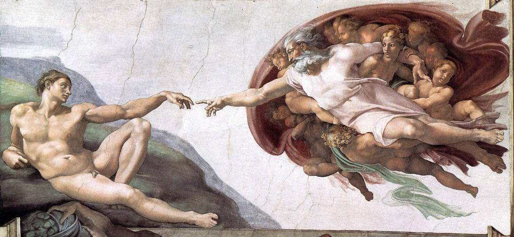
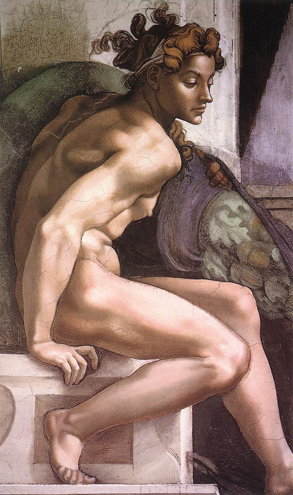
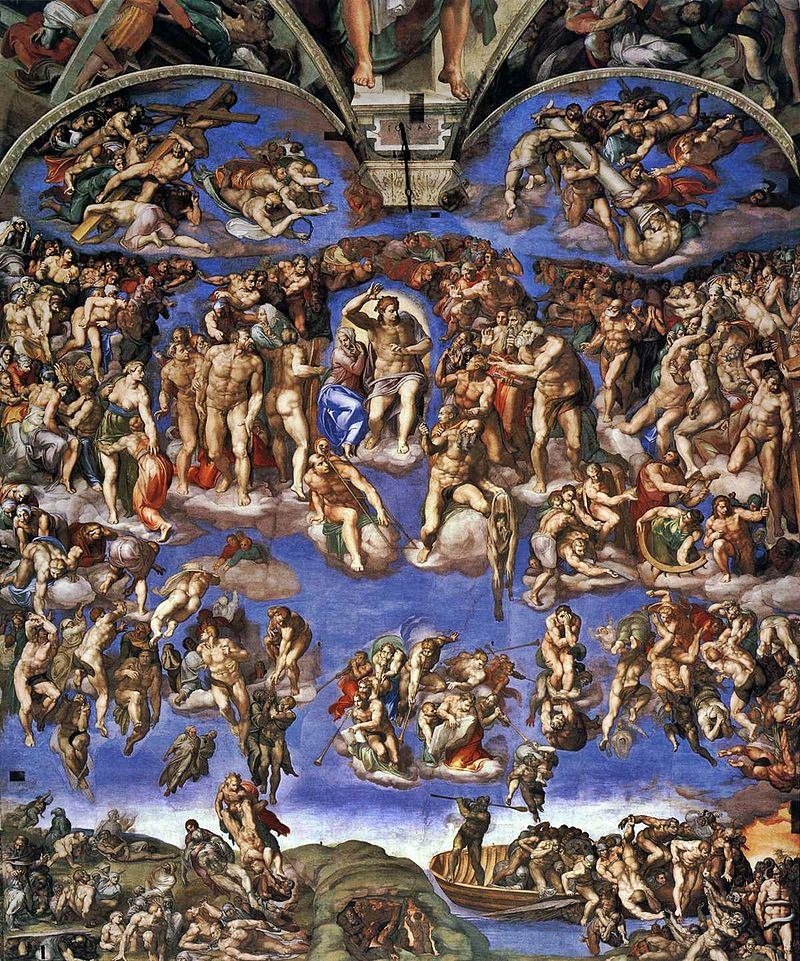
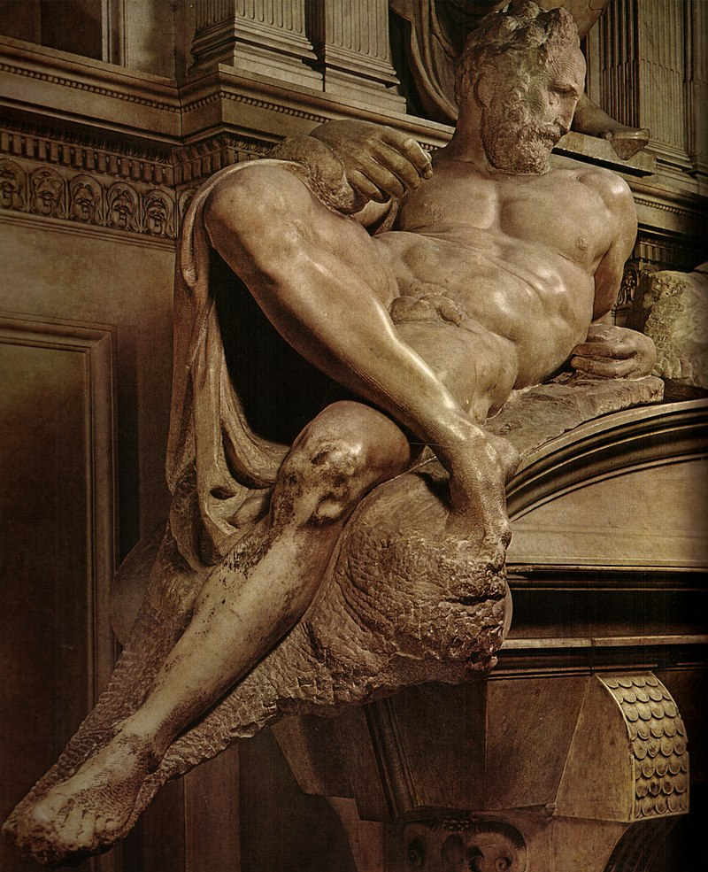
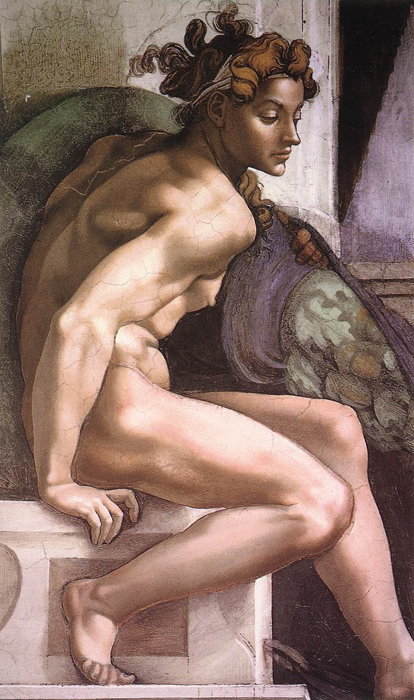
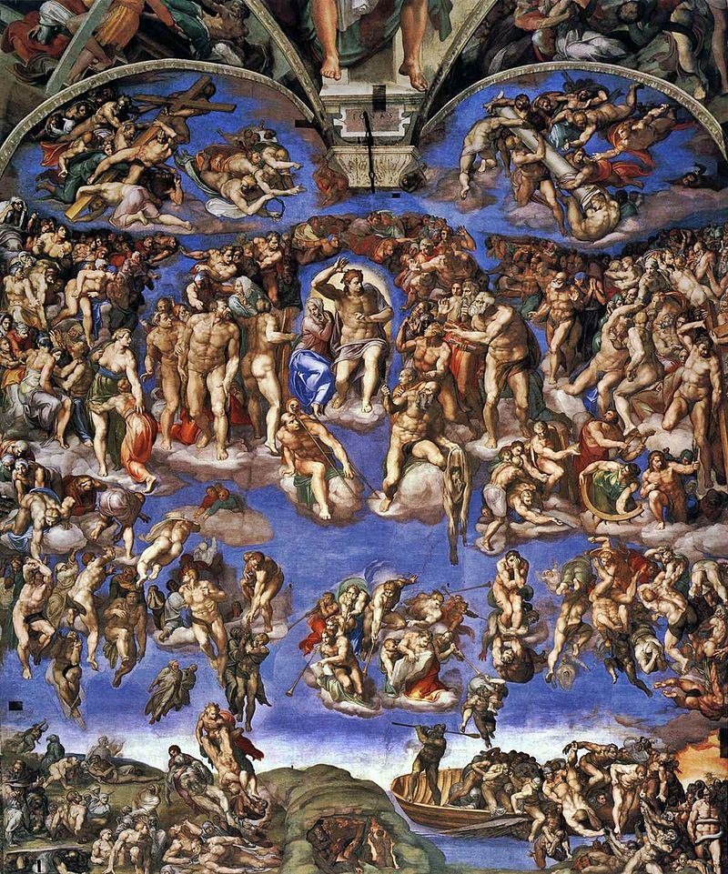
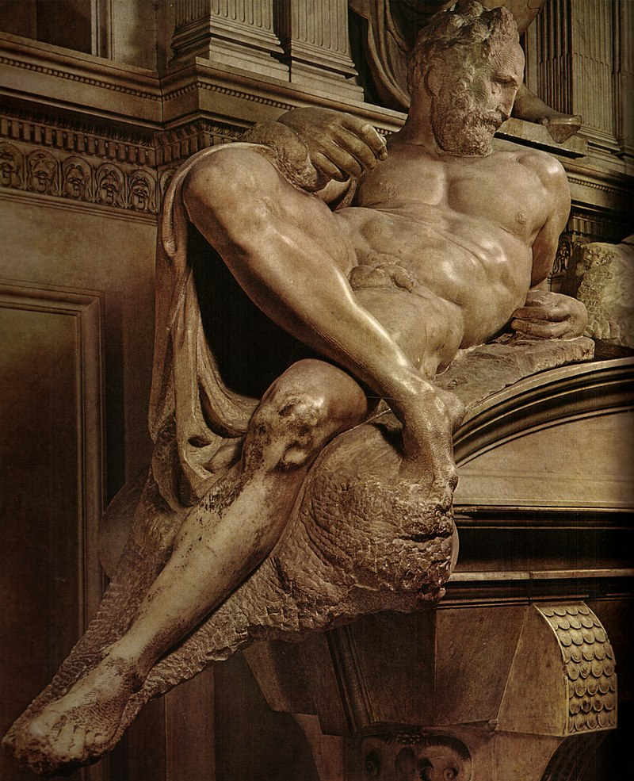

Michelangelo
Michelangelo Buonarroti, noto semplicemente come Michelangelo (Caprese, 6 marzo 1475 Roma, 18 febbraio 1564), è stato un pittore, scultore, architetto e poeta italiano. Daniele da Volterra, Ritratto di Michelangelo Autoritratto come Nicodemo, Pietà Bandini Michelangelo, disegno di Daniele da Volterra Soprannominato il Divin Artista, fu protagonista del Rinascimento italiano, già in vita fu riconosciuto dai suoi contemporanei come uno dei più grandi artisti di tutti i tempi. Personalità tanto geniale quanto irrequieta, il suo nome è legato ad alcune delle più maestose opere dell'arte occidentale, fra cui si annoverano il David, il Mosè, la Pietà del Vaticano, la Cupola di San Pietro e il ciclo di affreschi nella Cappella Sistina, tutti considerati traguardi eccezionali dell'ingegno creativo. Lo studio delle sue opere segnò le generazioni artistiche successive dando un forte impulso alla corrente del manierismo.

 




